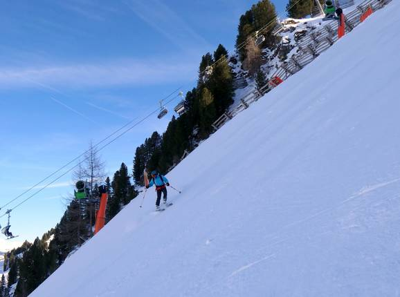

Het hart van Ski Zillertal 3000 wordt gevormd door het skigebied van Mayrhofen-Finkenberg-Lanersbach,
dat o.a. op de flanken van de Penken (2095 m) ligt. Met de 3S-Penkenbahn sta je vanuit het centrum van
Mayrhofen binnen 8 minuten op de pistes, vanwaar je door kunt richting de Horberg (2278 m), Rastkogel
(2500 m) en Eggalm (2300 m). Op de Penken kom je veel snowboarders en freestyle tegen, die zich kunnen
uitleven in het uitdagende PenkenPark. Voor gevorderde skiërs die niet vies zijn van een beetje
uitdaging is er de steile (78%!) Harakiri afdaling. Ook is er een snelheidspiste waar je je snelheid
kunt meten. Wie het liever wat rustiger aandoet voelt zich thuis op de andere skiberg van Mayrhofen, de
Ahorn (1965 m). Hoogtepunt van dit compacte skigebied is de 5,5 km lange dalafdaling. Aan het einde van
het Tuxertal ligt het letterlijke hoogtepunt van Ski Zillertal 3000, de Hintertuxer Gletscher. Hier zijn
de pistes maar liefst 365 dagen per jaar geopend.
